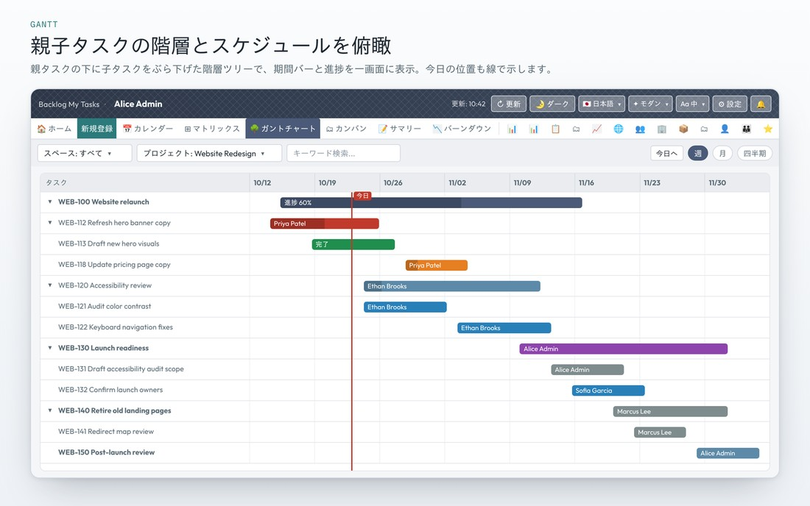

以階層樹及時間軸，一次過將期間、相依關係及進度可視化。只需拖曳長條，即可完成日程調整。

保持父子結構，將期間視覺化。亦可隱藏已完成嘅任務。可以喺任務列或分類標題撳「＋」，當場新增子任務或新任務；拖曳列首嘅把手（⠿）即可更改父子關係。▲▼只會喺相同開始日、相同父任務之中調整次序，無法移動嘅方向會隱藏。各列嘅📌可以釘選。
拖曳即可直接更改開始日・期限日，並即時同步到Backlog。如果開始日同期限日前後顛倒，會自動調整另一個日期。子任務同孫任務會按開始日重新排序，相依嘅後續任務亦會喺確認後自動順延。
連接各任務進度嘅閃電線，一眼睇到延誤同提早。周末、公眾假期同休假設定嘅日子，會以對齊日期欄、帶斜線嘅粉紅色帶狀顯示。群組標題行都會有同樣嘅斜線。
以箭頭將任務之間的前置→後續關係可視化，並提供延誤警示與最長路徑強調顯示
將里程碑期限可視化，並在父任務顯示子任務的完成率。即使大型項目，亦可透過虛擬捲動輕快運作。編輯、新增、刪除只即時更新該任務